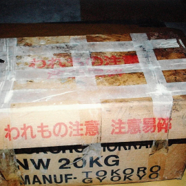
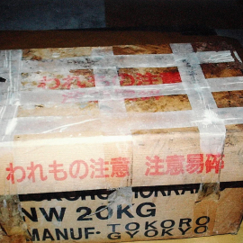

Escrito por Sophie Duarte
Última autualização feita em 21/03/22
• Huang-na •
Huang Na (26 de setembro de 1996 - 10 de outubro de 2004), era uma cidadã chinesa de oito anos residente em Pasir Panjang , Cingapura , que desapareceu em 10 de outubro de 2004. Sua mãe, a polícia e a comunidade realizaram uma busca por ela em todo o país, que durou três semanas. Depois que seu corpo foi encontrado, muitos cingapurianos compareceram ao velório e ao funeral, dando bai jin (contribuições para as despesas do funeral) e presentes.
Huang Na desapareceu em 10 de outubro de 2004; sendo visto pela última vez em uma praça de alimentação perto do centro de atacado. Ela estava vestindo uma jaqueta jeans azul, bermuda e não estava usando nenhum calçado. Das 7h00 à meia-noite, todos os dias durante três semanas, Shuying olhou através da ilha à procura de sua filha. A polícia, incluindo uma equipe do Departamento de Investigação Criminal , conduziu uma busca intensiva pela menina, e os policiais carregaram fotos dela durante suas rondas diárias. Voluntários formaram grupos de busca e a Biblioteca do Crime , um grupo voluntário dedicado a encontrar pessoas desaparecidas , distribuiu mais de 70.000 folhetos pedindo informações. ]A empresa de táxis local, ComfortDelGro , pediu a seus taxistas que se juntassem ao esforço de busca
Dois cingapurianos ofereceram recompensas de S $ 10.000 e S $ 5.000 por encontrar Huang Na, enquanto o gerente de uma empresa de design online criou um site para aumentar a conscientização e coletar dicas. A busca se estendeu até a Malásia, com voluntários colocando cartazes nas cidades vizinhas de Johor Bahru e Kuala Lumpur . Supostamente, pelo menos 30 taxistas também colocaram pôsteres de Huang Na nos para-brisas traseiros e nos assentos dianteiros de seus veículos. Pelo menos cinco donos de cafeterias em Johor Jaya , Taman Yew e Skudai também colocaram pôsteres.
Em 19 e 20 de outubro, a polícia de Cingapura interrogou Took, como parte de suas investigações. Ele disse aos policiais que três homens chineses sequestraram a garota.
Após interrogar Took, a polícia o acompanhou até sua casa e até a delegacia novamente para um teste de polígrafo . No caminho, eles pararam em um restaurante ao longo da Pasir Panjang Road para uma refeição. Enquanto comia, Took disse que precisava ir ao banheiro, escapou, pegou um táxi para Woodlands e se esgueirou pela Calçada até a Malásia. A polícia de Singapura o procurou até que ele se entregou em 30 de outubro, confessando que havia estrangulado Huang Na acidentalmente durante um jogo de esconde-esconde em um depósito. No dia seguinte, o corpo de Huang Na foi encontrado no Parque Telok Blangah Hill, dentro de uma caixa de papelão, e Took foi acusado de seu assassinato. Direct Singapore Funeral Services supervisionou seu funeral gratuitamente. Milhares compareceram ao velório e funeral de Huang Na; alguns deram bai jin e presentes, como doces, flores e seus produtos favoritos da Hello Kitty . No entanto, alguns cingapurianos tentaram ganhar dinheiro com a morte da garota comprando números 4D associados a ela. Outros espalharam boatos de que Shuying estava tendo casos e estava ávido por doações.
 
